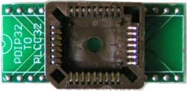
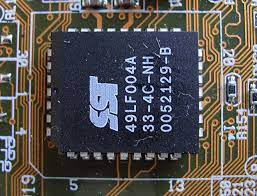

Micrologiciel, microprogramme, microcode,
logiciel interne ou encore logiciel embarqué, c'est
un programme intégré dans un matériel informatique.
Voir une vidéo


La mémoire dans laquelle réside le firmware
peut être :
- non volatile, stockant le programme et les
données même lorsqu'elle n'est pas alimentée
en électricité. C'est le cas le plus courant,
avec des ROM,
des EPROM
ou une mémoire flash.
- volatile, donc effacée lorsqu'elle n'est
plus alimentée en électricité. Dans ce cas,
le firmware doit être chargé par un pilote à
la mise sous tension.
En savoir plus